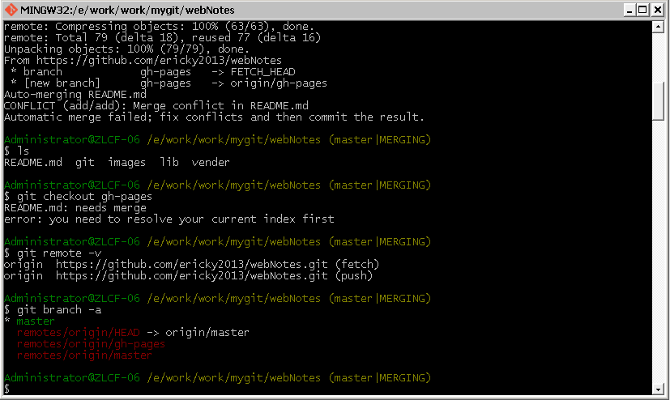

####Git 常见错误
1. 本地只有一个主分支master,远程有一个gh-pages分支,当在本地执行 `git pull origin master ` 出现如下结果:

发现结尾有一个(master ｜MERGING) 提示 下面是我操作截屏:
<img src="../images/git-error-1.png" alt="">
<img src="../images/git-error-2.png" alt="">
<img src="../images/git-error-3.png" alt="">
<img src="../images/git-error-4.png" alt="">
<img src="../images/git-error-5.png" alt="">
2. 对于`$ git branch -a ` 多出了一个分支 `remotes/origin/HEAD -> origin/master` 不理解?
* master
remotes/origin/HEAD -> origin/master
remotes/origin/gh-pages
remotes/origin/master
网上搜索:HEAD指向的是当前工作的分支(branch)
更多HEAD解释:
http://stackoverflow.com/questions/4359099/git-branch-named-origin-head-origin-master
http://stackoverflow.com/questions/2304087/what-is-git-head-exactly
http://stackoverflow.com/questions/12613793/why-is-there-a-remotes-origin-head-origin-master-entry-in-my-git-branch-l
http://blog.csdn.net/csfreebird/article/details/7583363
http://lishicongli.blog.163.com/blog/static/1468259020132125247302/
3. 当切换分支时,提示如下:
$ git checkout gh-pages
Branch gh-pages set up to track remote branch gh-pages from origin.
Switched to a new branch 'gh-pages'
#查看分支,发现有gh-pages分支和remotes/origin/gh-pages 这两个分支有什么区别?
$ git branch -a
* gh-pages
master
remotes/origin/HEAD -> origin/master
remotes/origin/gh-pages
remotes/origin/master